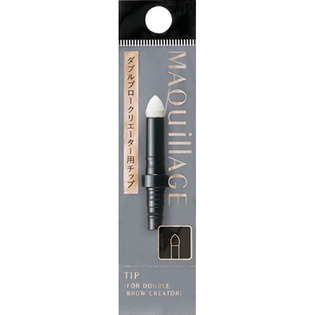
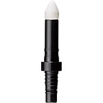

返回列表
产品名称：マキアージュ ダブルブロークリエーター用チップ

資生堂 マキアージュ ダブルブロークリエーター用チップ －
メーカー 資生堂
JANコード 4901872608478
商品の特徴
マキアージュダブルブロークリエーター（パウダー）用のアイブローチップです。
別売りの「マキアージュアイブロー用ホルダー」にセットしてお使いください。
成分・分量
-
用法及び用量
【使用方法】
・ホルダー付属のチップをはずしてから本品をセットしてください。